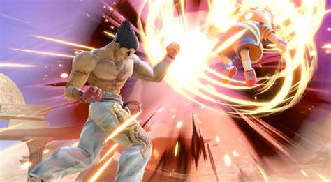

1，すべての攻撃が強い
カズヤには様々な強力な攻撃技がたくさんあり、それらを食らうと、簡単に試合に負けてしまうことが多くあります。
2，即死コンボを持っている
カズヤの最速風神拳という技に当たってしまうと、キャラクターがしびれてしまい、そこからコンボをつなげられ、負けてしまうことがあります。
体重が重い
このスマブラというゲームは、相手を画面の外に出すことが勝利条件なのですが、体重が重いキャラは、他のキャラよりも吹っ飛びにくく、とても倒すのが難しいです。 